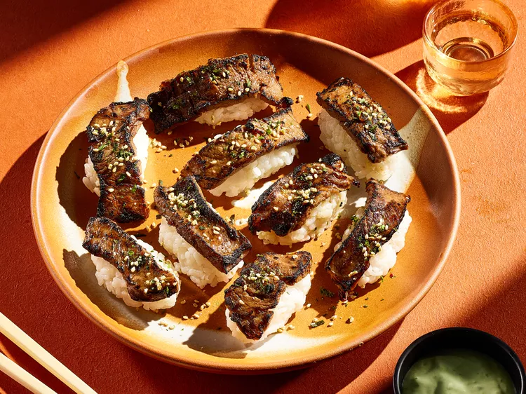

Aburi Steak

Description
“Aburi,” the technique applied to this aburi steak, means flame-seared in Japanese. The technique is often applied to raw fish, but it works well for tender, marbled beef cuts, too. A butane torch lets you customize the doneness. Torch less or more depending on how charred you like it.
Ingredients
- 1 (12 to 16 oz) boneless rib eye steak
- 1/2 cup short grain white rice
- 3/4 cup water
- 2 teaspoons rice vinegar
- 1 teaspoon white sugar
- 1/2 teaspoon salt
- 1/4 cup less-sodium soy sauce
- 1 tablespoon pure maple syrup
- 1 tablespoon Asian-style chili paste (such as sambal oelek)
- 1 tablespoon vegetable oil
- 1/3 cup sour cream
- 1/4 teaspoon lime zest
- 2 teaspoons fresh lime juice
- 2 teaspoons wasabi paste, or more to taste
- 2 teaspoons furikake seasoning or toasted sesame seeds
Directions
Step 1
- Put steak on waxed paper-lined baking sheet. Freeze until just firm, about an hour
Step 2
- Meanwhile, for sushi rice, rinse rice under cold running water, rubbing grains together with your fingers. Combine rice and